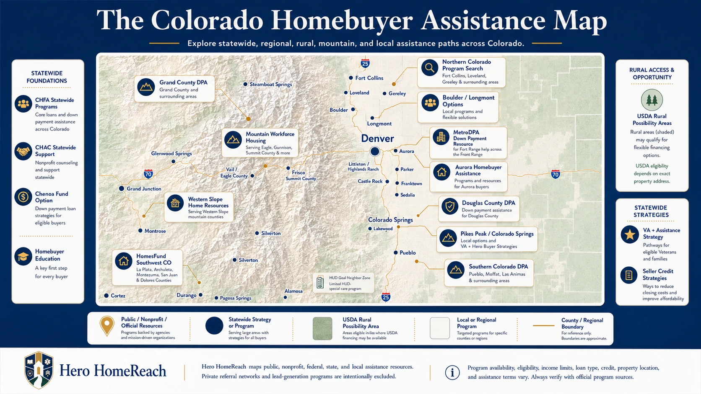

The Colorado Homebuyer Assistance Map
Hover or click any labeled area on the map to open the detail panel. This is a visual educational guide, not a boundary map, eligibility map, or program approval tool.

Click the map or choose a pathway card to review educational starting points for statewide programs, regional assistance, VA-related strategies, seller credits, homebuyer education, rural possibilities, and local resources. Program availability and eligibility vary.
Hover or click any labeled area on the map to open the detail panel. This is a visual educational guide, not a boundary map, eligibility map, or program approval tool.

Use these cards when the buyer situation matters more than geography.
Especially useful for public service heroes comparing closing cost strategies.
Review assistance paths, homebuyer education steps, planning ranges, seller credit questions, and lender conversation prompts before your first serious loan conversation.